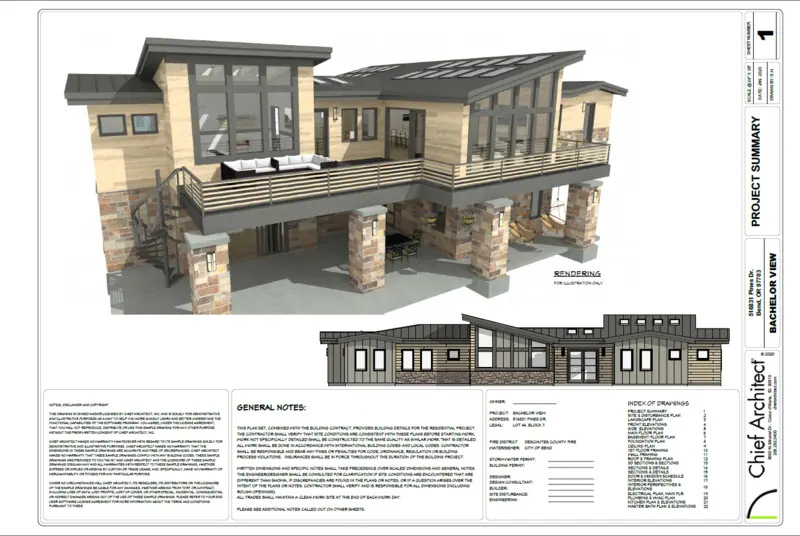
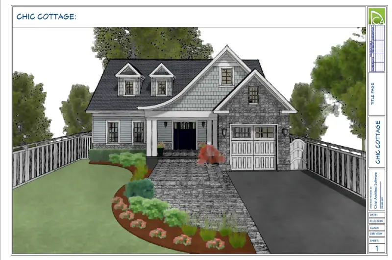

01
Architectural BIM Modeling
Revit models built to a defined level of development, structured so the drawings, schedules and views come out of the model rather than being drawn twice.
Permit sets, construction documents, structural and MEP coordination, and scan-to-BIM — produced remotely for US architects, builders and developers.
I provide remote architectural BIM, CAD and construction documentation support to US design firms, builders and developers — working from your drawings, CAD files, sketches, point clouds and site information to produce coordinated, submission-ready documents.
More about how I work →Revit models built to a defined level of development, structured so the drawings, schedules and views come out of the model rather than being drawn twice.
Residential and commercial permit sets prepared to submit — coordinated, annotated and code-aware, with revisions turned around quickly.
Precise AutoCAD drafting from sketches, markups, PDFs or field measurements, delivered on your layer standard and title block.
Full CD sets that a builder can actually work from — framing, details and building services coordinated against the architectural set.
Point cloud data turned into a dependable existing-conditions model, so renovation and refurbishment design starts from what is actually there.
Structural plans, framing layouts and connection details for concrete, steel and timber, coordinated with the architectural model.






Send the drawings, the CAD files or just a sketch, and tell me what the deliverable has to be. I will come back with scope, format and a realistic timeline.